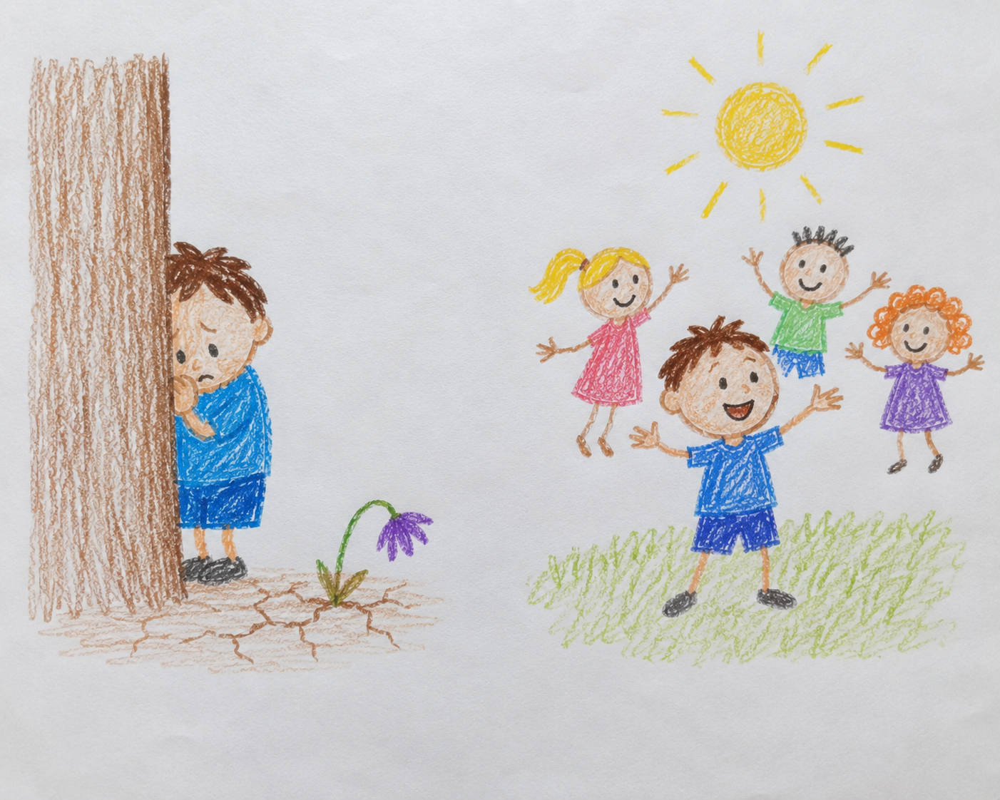

She could've been Erdős-1, but she was shy
Several years ago I was at a network science conference in Tel Aviv, organized by Albert-László Barabási and Baruch Barzel. After the talks a few of us walked to a pub next door. It was full. A woman asked if she could take the empty chair at our table, then asked what we did. Network science, we said. She smiled. “I know a little about that. At the end of my PhD, Paul Erdős offered to write a paper with me. I was too shy, so I said no.”
If you are not a mathematician: Erdős was one of the most prolific mathematicians who ever lived, and the field measures closeness to him by how many co-authorship steps separate you from him, so writing a paper with him directly gives you an Erdős number of 1, a small and lifelong badge of honor. She could have had it. Even before earning her PhD!!! She was too shy to say yes.

She told it lightly, with a smile, decades later. That is the part that stayed with me. Nothing too serious. Just a door she did not walk through, and a life that quietly closed around the decision. She was, I would guess, barely 60 that night. Back then that looked old to me. I am now not far from it myself.
Why am I telling you this?
People are shy about their own work, and many of us were raised to treat self-promotion as something a little shameful. This is not spread evenly. Women self-promote markedly less than equally-performing men, a gap that shows up as early as sixth grade and persists even when there is nothing to gain by holding back (Exley and Kessler, “The Gender Gap in Self-Promotion,” Quarterly Journal of Economics, 2022). And when women do self-promote, they are often penalized for it, judged less likeable and less hireable (Rudman, Journal of Personality and Social Psychology, 1998). So the reluctance is not a character flaw. It is a rational response to a real bind.
But shy people, men and women alike, shortchange themselves and the rest of us. If you do good work, it is your job to make it visible. A good job nobody can find is not really a good job. Unless you are a deep-cover spy, in which case, carry on.
So what do you do about it?
First, reframe it. You are not bragging, you are leaving a trail. “Here is what I did and where to find it” is documentation, not a peacock display, and that framing also sidesteps most of the backlash, because it points at the work and not at you.
Second, tell the few people who would actually care, directly. You do not have to shout into the void. A short note, with no ask in it, to the handful of people who would genuinely want to know is real visibility, and it almost never feels like self-promotion.
Third, make it a habit, not a performance. A small, regular trickle of “here is what I learned this week” beats one agonized announcement a year, and it never requires you to work up the nerve for a big reveal.
And if a weekly visibility habit is exactly the kind of thing you will quietly let slide, automate it. That is the bet behind Loud Camel, a tool that helps researchers get cited and recognized: it runs the visibility steps on a schedule, so good work gets surfaced even in the weeks you do not feel like showing up.
The shy person’s favorite excuse is “I have nothing worth sharing right now,” and a blank screen is happy to agree. So this week I changed how Loud Camel handles that moment. It now always proposes at least one thing to publish, even when nothing obvious is in the queue, and more when good openings are scarce. It varies the angle each time, so even a saturated account keeps getting fresh suggestions instead of repeats or an empty page. You still have to do the un-shy part and hit publish. Loud Camel just makes sure there is always something there to publish.
She did excellent work for decades. She just never let most people see that part of it. מי שמתבייש מתייבש, the saying goes: the shy one dries up. Do the good work. Then make sure someone can find it.
PS. I never asked her name. The pub was loud, the night wound down, and I was too shy to ask a stranger for her email. I still think about it. She had spent a whole career in the same field Loud Camel works in, and I could have asked her to look at what I am building. I did not. So this is a post I had to write to myself too.